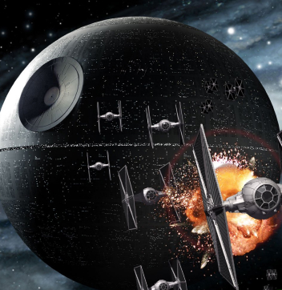
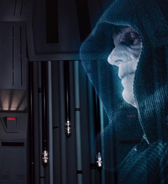
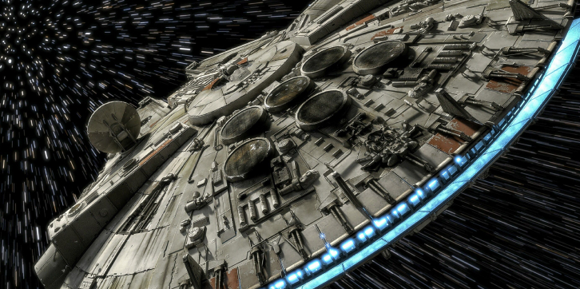
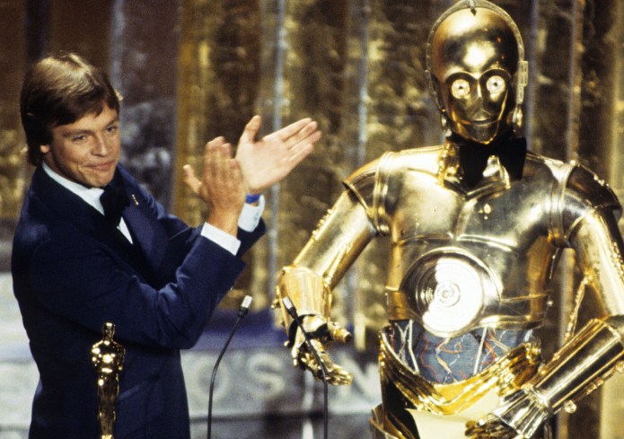

ABOUT
SUMMERY
Introduction to the history of the beginning of The Empire Strikes Back
- It is a dark time for the Rebellion. Although the Death Star has been destroyed, Imperial troops have driven the Rebel forces from their hidden base and pursued them across the galaxy. Evading the dreaded Imperial Starfleet, a group of freedom fighters led by Luke Skywalker has established a new secret base on the remote ice world of Hoth. The evil lord Darth Vader, obsessed with finding young Skywalker, has dispatched thousands of remote probes into the far reaches of space....
- Obi-Wan Kenobi, who became the spirit of the Force, appears before Luke Skywalker, who has become a Rebel Alliance officer, and tells him to accompany Yoda to the planet Dagobah. Imperial forces are dispatched to pursue Luke, who is practicing the Force, and Han Solo, Leia Organa, and eventually Luke fall into Darth Vader's trap.
- 
- 
- 
One of the things about Mobile Strikes Back is that it anticipates that the entire story of the film will not be seen. The general is on a roll, but from the beginning of the movie, he is happily divided by the mobile army. Luke removes Yoda's claw to become the master, and Leia is connected to anyone other than Luke, and one person can become a hostage and be rescued outside of the movie. You must obtain permission.
AWARD HISTOTY
- Star Wars Episode V: The Empire Strikes Back is a 1980 American science fiction fantasy epic film. It was directed by Irvin Kershner, the story was written and produced by George Lucas, and Lawrence Kasdan and Lee Brackett were in charge of the screenplay. It is the 5th episode in the 9-part Star Wars movie script and the second in terms of production period. It is the most highly regarded work in the series by critics and the public.
- At the Academy Awards, it was nominated for the Best Art, Best Sound Recording, and Best Music awards and won the Best Recording Award, and won the Best Special Effects Film Award as a single candidate with no competition Empire Magazine's Top 100 Movies, Past Hugo Awards Ceremony/Best Dramatic Presentation, Past Nebula Award Winners Media Category, Past Saturn Awards Best Science Fiction Film
- 
- Past Hugo Awards Best Dramatic Presentation, past Nebula Award Winners Media Category Past Saturn Awards Awards Science Fiction Film Award is the best work of the Star Wars trilogy and the most thought-provoking work.
- - Roger Ebert The best film in George Lucas' Star Wars trilogy - Angela Errigo Many people say The Empire Strikes Back is the best Star Wars movie. But I don't agree. “The Empire Strikes Back” is one of the best films of all time. - Jeremy Jans